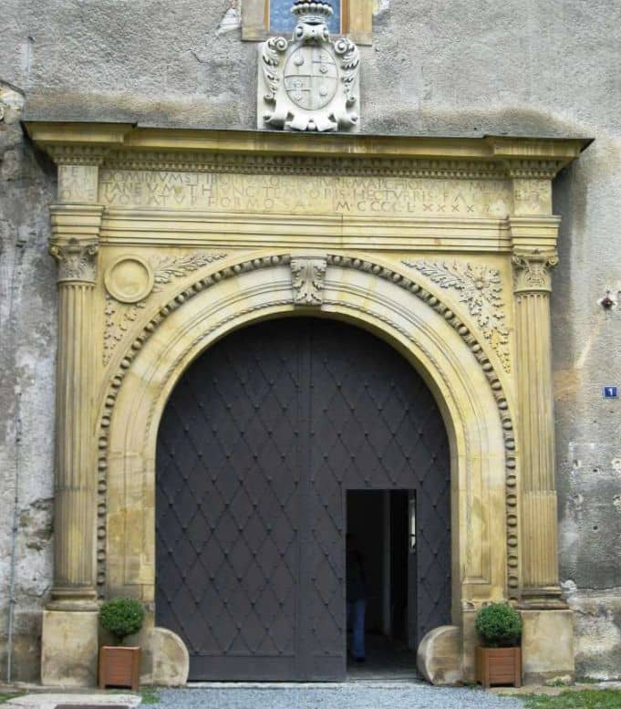
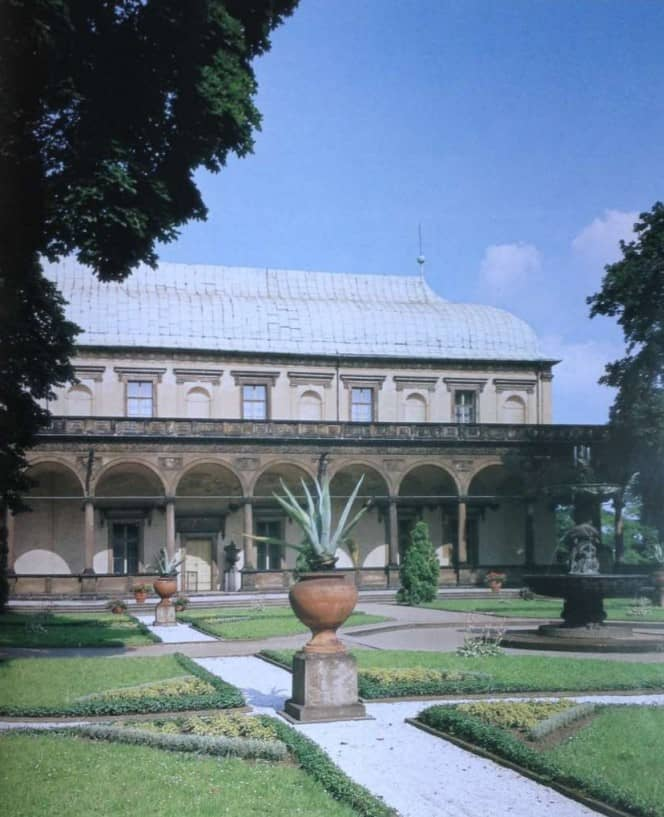
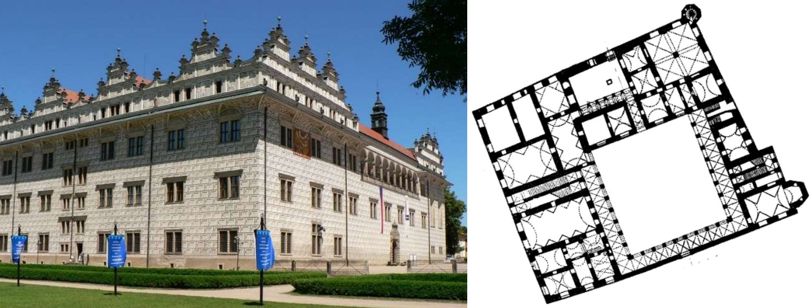
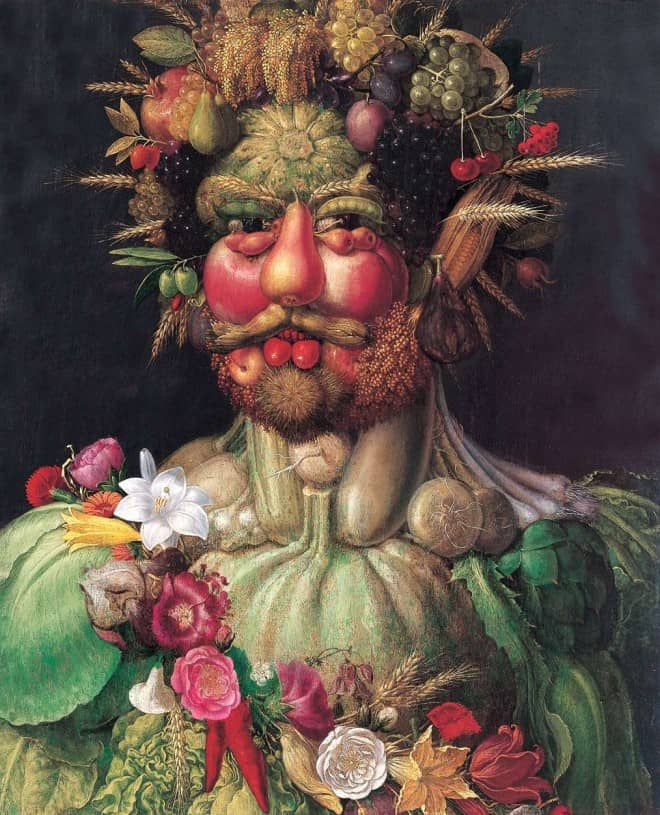

11. Renesanční umění v českých zemích
- charakteristika renesance - viz otázka 10
- dostává se k nám díky Italským umělcům (VLAŠI)
Datace
-
1470 - 1526 - RANÁ
- prolínánní s pozdní gotikou během vlády jagelonců
- Tovačov, Moravská Třebová
-
1526 - 1580 VRCHOLNÁ
- 1526 Ludvík Jagellonský umírá U Moháče a nastupují Habsburkové - zůstávají zde přes 300 let
-
1580 - 1620 POZDNÍ
- 1618 ZAČÁTEK 30 LETÉ VÁLKY
Architektura
- NOVÁ STAVBA → ZÁMEK
- na rozdíl od hradu neplní fortifikační funkci, pouze reprezentační
- fortifikační funkci nyní plní PEVNOSTI
- ZÁMKY - př. Český Krumlov, Kratochvíle
-
PORTÁLY A OKNA (např. Tovačov)
- OKNA → od gotického se liší tím, že je pravoúhlé a profilované, gotické je lomené a ve zdi
- KROUŽENÁ A PŘESEKÁVANÁ
-
VLADISLAVSKÝ SÁL
- ŽEBRA → GOTIKA, OKNA → RENESANCE
Sochařství
- EPITAFY → vyobrazení postavy s textem (většinou se modlí)
- portréty se liší MÓDOU a hlavami z PROFILU
MALÍŘSTVÍ
- portréty se liší MÓDOU a hlavami z PROFILU
-
MANÝRISMUS
- Arcimboldo (ital)
- Zátiší, stylizované lidské hlavy s ovocem a zeleninou
- motiv živlů → oheň, voda, roční období
-
Barholomeus Spranger
- Chiaroscuro + diagonály = předchůdce baroka
OBRÁZKY

PORTÁL TOVAČOV
- PORTÁL, KOMPOZITNÍ HLAVICE, SLOUP, KANELURY, PATKA, RENESANČNÍ OKNO

BELVEDERE
- archivolty, stavba sloužící k prohlížení zahrady

LITOMYŠL + půdorys
- snaha zvětšit zámek → atika
- výrazná římsa
- proškrabávaná omítka → sgrafita
- arkádové nádvoří

VERTUMNUS
- KRYPTOPORTRÉT → SKRYTÝ PORTRÉT CÍSAŘE RUDOLFA
- BŮH VERTUMNUS JE BOHEM ÚRODY